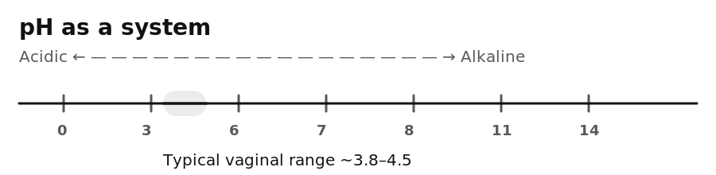
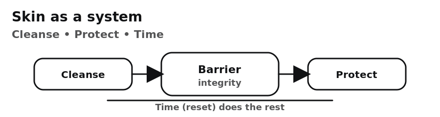

Care is built in the details.
Not with shame. Not with perfume. Not with “fixes.” But with systems-thinking, restraint, and respect.

Vaginas as ecosystems: pH and balance.

Mouths as systems: timing, moisture, gentleness.

Skin as a system: cleanse, protect, time.
Care is not about correcting bodies.
It’s about understanding systems and behaving with respect inside them.
It’s about understanding systems and behaving with respect inside them.
Recommended reading path
Start with Vaginas as ecosystems, then External means external, then After doesn’t mean absent.